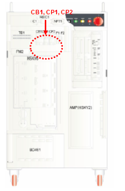

该错误是因马达温度超过正常值而使内置于马达的温度传感器运转所致。即使马达温度没有上升，若此错误依然发生，则是输入系统出了问题。
|
(1) 请检查回路保护器。 (2) 忽略TS输入信号，继续检查。 (3) 请检查制动器电源生成部分的电压。 1. 请更换顺序电路板或者 IO电路板。 2. 请咨询本司并采取适当措施。 |
(1)请检查回路保护器。
这可能是因回路保护器被切断所致，因此，请检查控制柜上端的回路保护器是否被阻断，若其被阻断请使其恢复。

(2)忽略TS输入信号继续检查。
忽略TS输入信号，检查输入线是否有异常。忽略TS输入信号的具体方法请参照维修说明书的顺序电路板部分内容。
(4) 请检查制动器电源生成部分的电压。
有可能是制动器电源生成部分的问题。控制柜的电容器和整流器（Rectifier）已设置好。由20V电源生成DC24V电源。请用测试仪检验是否生成了DC24V电源。
若依然无法解决问题，请按以下顺序采取处理措施。
1. 请更换顺序电路板。
2. 请更换IO板。
3. 请咨询本司。